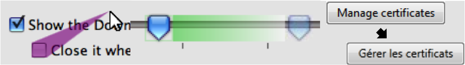

Prefab: The Pixel-Based Reverse Engineering Toolkit
Prefab is a system for reverse engineering the interface structure of graphical interfaces from their pixels. In other words, Prefab looks at the pixels of an existing interface and returns a tree structure, like a web-page's Document Object Model, that you can then use to modify the original interface in some way. Prefab works from example images of widgets; it decomposes those widgets into small parts, and exactly matches those parts in screenshots of an interface. Prefab does this many times per second to help you modify interfaces in real time. Imagine if you could modify any graphical interface? With Prefab, you can explore this question!
Prefab helps you implement your ideas in the real world. It provides tools for reverse engineering the appearance of widgets and interpreting the semantics about interfaces. Prefab is written in C# and runs on windows, but it can reverse engineer interfaces from any OS. Check out our videos where Prefab interprets the pixels of a remote desktop application to reverse engineer Mac OS X interfaces.
The demonstration videos provide numerous examples of the types of applications that can be built with the Prefab toolkit.
Prefab code is available on GitHub. Build something cool!